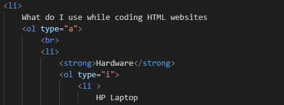

Mushed HTML Elements

-
What do I use while coding HTML websites
-
Hardware
-
HP Laptop
-
Extra external keyboard
-
Extra external mouse
-
Software
-
Visual Studio Code / Atom
-
Google Chrome
-
Github
-
How do I manage?
-
I love solving "code problems"
-
Willing to ingest more development knowledge each day
-
Having the mindset of being a producer
Note
We are not born knowledgeable. When embaking on a new skill and
you put in the effort, day by day you get better. Be consistent and you'll
surely get there.
My newbie journey in coding can be referenced here.
The End'